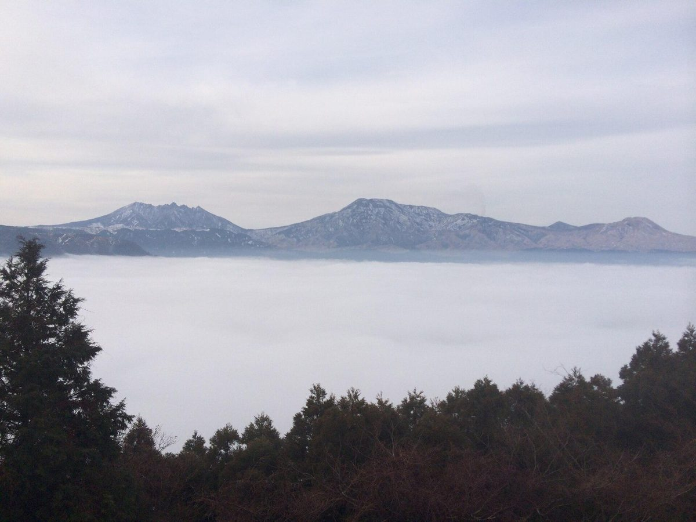
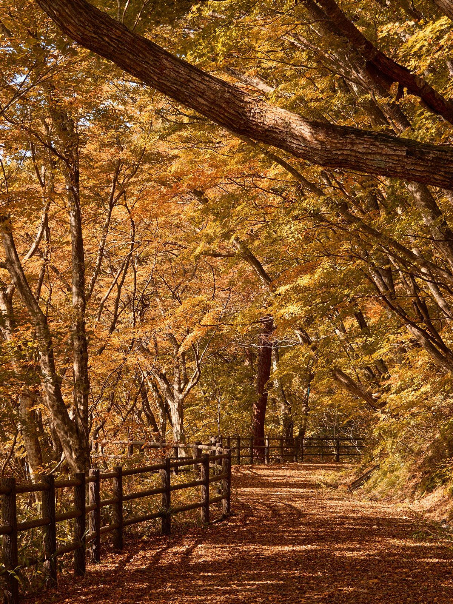
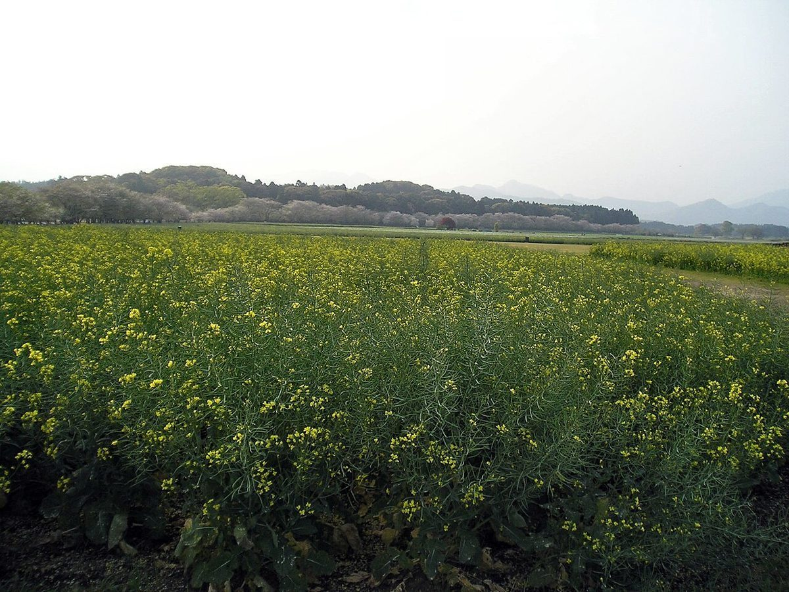

試作サンプルページ(店舗公開のものではありません)

掲載している写真はフリー素材のイメージです。店舗の実際の様子ではなく、他の地域で撮影されたものや撮影地が不明なものを含みます。
カフェ ニジノフネ
熊本県天草市五和町御領にあるカフェです。
営業時間・メニューなどの詳細は準備中です。お問い合わせください。
ご案内
- 住所
- 熊本県天草市五和町御領6850-1
地図を見る - @cafe_nijinofune
- 営業時間
- 準備中準備中(お問い合わせください)
- 定休日
- 準備中準備中(お問い合わせください)


お問い合わせは、お電話かInstagramからどうぞ。
掲載している写真はフリー素材のイメージです。店舗の実際の様子ではなく、他の地域で撮影されたものや撮影地が不明なものを含みます。